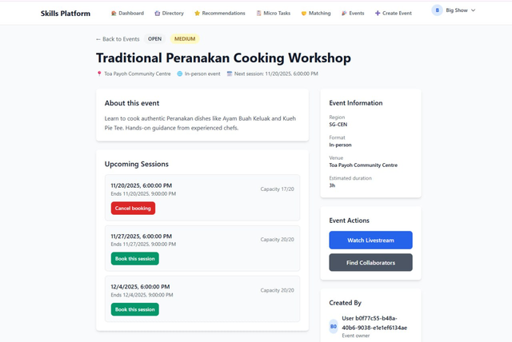
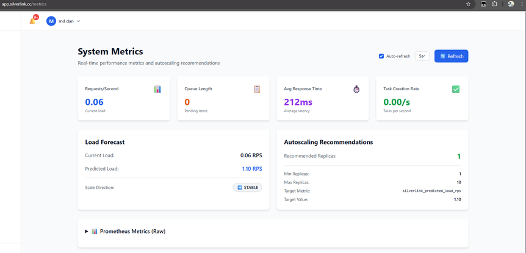
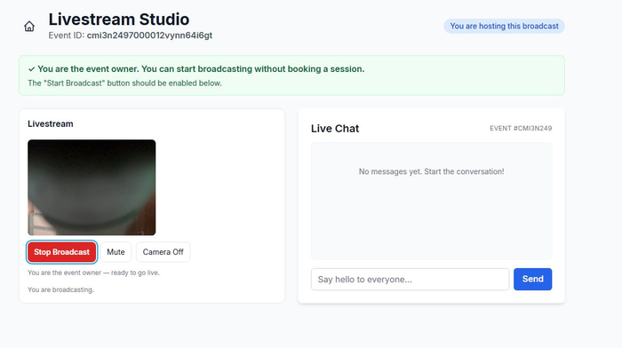

SilverLink SG
Connects seniors and youth through skill-sharing and live events, built to block double-bookings.
- Role
- Team project, Group 20, 6 people. SIT × University of Glasgow.
- My part
- NEEDS JOHN (Q1): what you built
Hidden until answered; the Role line carries it. - Outcome
- A 6-person team delivered it in 7 Agile sprints: 4 gRPC services on an 8-node Kubernetes cluster, with livestreaming, live chat and double-booking protection.
Key figures
- gRPC microservices
- 4
- Kubernetes nodes
- 8
- isolated database schemas
- 8
- Agile sprints
- 7
The problem
By 2030, 1 in 4 Singaporeans will be over 65.
- Many seniors face isolation and are left out of digital life.
- Young people miss what older generations can teach.
The course brief asked:
How might we use technology that is intuitive, culturally sensitive and engaging to build community among seniors?
How it works
4 gRPC services behind one REST gateway, each with its own database schema.
What people can do
- Book seats at workshops, mentoring sessions and community events.
- Host or watch livestreams with live chat.
- Pick up volunteering tasks and earn badges.
SLOT: architecture.svg (design-visual-storyteller)interim: FlowDiagram tiers
- React front end
- API gatewayREST to gRPC
- gRPC services
- Event
- Booking
- Volunteer
- User
- 8 isolated schemasNeon PostgreSQL
Built with
Key decision
Bookings never overbook, even when many people book at once.
No double-booking
A booking saves only if the seat record hasn't changed since it was read (optimistic concurrency). A clash returns 409 Conflict instead of overbooking.
Retries book once
Idempotency keys make a repeated request return the same result, so each request runs exactly once.
Scale before the rush
An exponential moving average (EMA) forecasts load and sets a recommended replica count per service.
Evidence
Screens from the team's build.



What's next
NEEDS JOHN (Q2, Q14)
Is app.silverlink.cc live, and can it be linked? Any real-world result (demo day, grade, award)? Until answered this section is one lead line on navy, no window: e.g. a link to the live app, or it is dropped and the TOC loses its last item.